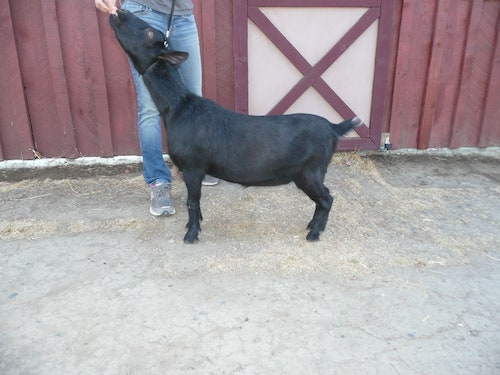
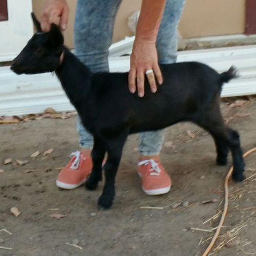
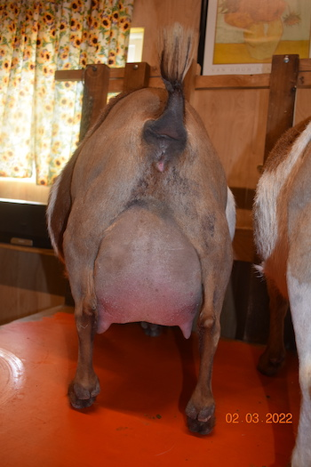
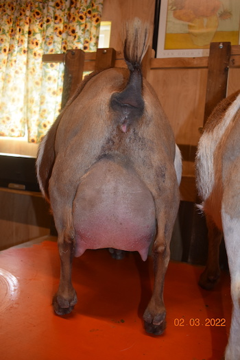

JUNIOR DOES
| Doe | Photos |
|---|---|
|
DOB 04/07/2016 Sire: Castle Rock Moon Rock *B
Dam: The DJ's Kids MM Baby Godiva Sire's Sire: Castle Rock Chicago Peace +B
Sire's Dam: SGCH Castle Rock Moon Beam VEEE90
Dam's Sire: Castle Rock Chicago Peace +B
Dam's Dam: Castle Rock Brinicle VEVV88
SSS: Copper Penny ROF Calico Jack SSD: GCH-ARMCH CRF Castle Rock Tuscan Sun 1*M *D VEEE90
SDS: SG Castle Rock Cleveland Sage +*B *S 2015 & 2016 Elite Buck List
SDD: CRF Castle Rock Moon River +EEE88
DSD: GCH-ARMCH CRF Castle Rock Tuscan Sun 1*M *D VEEE90
DDD: SGCH CRF Castle Rock Blizzard VEEE91
SSSS: Twin Creeks FAX Ring Of Fire VVE88
SSDD: TX Twincreeks WOF Sunsprite VVVV87
SDSD: SGCH-ARMCH CRF Castle Rock Alum Root 3*D VEEE91
SDDD: MCH-SGCH Castle Rock Once Ina Blue Moon 2*D VVEV86
DSSS: Twin Creeks FAX Ring Of Fire VVE88
DDSD: MCH-SGCH Castle Rock Once Ina Blue Moon 2*D VVEV86
|
  |
|
DOB 04/09/2016 Sire: Castle Rock Moon Rock *B
Dam: The DJ's Kids MM Baby Godiva Sire's Sire: Castle Rock Chicago Peace +B
Sire's Dam: SGCH Castle Rock Moon Beam VEEE90
Dam's Sire: Camanna Music Man Dam's Dam: AGS DJ's Kids KK Jayja SSS: Copper Penny ROF Calico Jack SSD: GCH-ARMCH CRF Castle Rock Tuscan Sun 1*M *D VEEE90
SDS: SG Castle Rock Cleveland Sage +*B *S 2015 & 2016 Elite Buck List
SDD: CRF Castle Rock Moon River +EEE88
DSS: Proctor Hill Farm TO Go Daddy EEEE92
DSD: CH Camanna CS Moonlight Sonata EEEE91
SSSS: Twin Creeks FAX Ring Of Fire VVE88
SSDD: TX Twincreeks WOF Sunsprite VVVV87
SDSD: SGCH-ARMCH CRF Castle Rock Alum Root 3*D VEEE91
SDDD: MCH-SGCH Castle Rock Once Ina Blue Moon 2*D VVEV86
SSD: MI Sugarcreek WM You Tube VEEE90
|
|
|
DOB 07/28/2016 Sire: Proctor Hill Farm RT Blackjack +V+84
Dam: AGS Miniprints Sabari 1*M VEEV89
Sire's Sire: AGS Dill’s LD Roulette +B
Sire's Dam: AGS Dragonfly RY Mardi Gras VEEV88
Dam's Sire: AGS CRF Castle Rock Tiger Moon Dam's Dam: AGS Miniprints Wortha Plum Nickel SDD: SG Flat Rocks Here For The Party EEEV90
|


|
|
DOB 01/19/2017 Sire: Castle Rock Moon Rock *B
Dam: 3G Family Farm HM Zinfandel 3*M
Sire's Sire: Castle Rock Chicago Peace +B
Sire's Dam: SGCH Castle Rock Moon Beam VEEE90
Dam's Sire: CRF Castle Rock Harvest Moon +B
Dam's Dam: 3G Family Farm BS Love Bunny 2*M
SSS: Copper Penny ROF Calico Jack SSD: GCH-ARMCH CRF Castle Rock Tuscan Sun 1*M *D VEEE90
SDS: SG Castle Rock Cleveland Sage +*B *S 2015 & 2016 Elite Buck List
SDD: CRF Castle Rock Moon River +EEE88
DSD: MCH-SGCH Castle Rock Once Ina Blue Moon 2*D VVEV86
DDD: SG Sly Farms S Lovebug 1*M VEEV88
SSSS: Twin Creeks FAX Ring Of Fire VVE88
SSDD: TX Twincreeks WOF Sunsprite VVVV87
SDSD: SGCH-ARMCH CRF Castle Rock Alum Root 3*D VEEE91
SDDD: MCH-SGCH Castle Rock Once Ina Blue Moon 2*D VVEV86
DSD: SGCH Castle Rock Rainy Day Fund +VEV86 Chardonay is cream with light red roaning. She has beautiful blue eyes that she makes sure are in front of yours all the time. She is very friendly and has to be in the middle of everything. When I’m cleaning the pens that means in between my legs or right where I am working. She is not about to miss a thing. This graceful, long doe has a long neck, beautiful top-line and exceptional spring of rib. She is femininity and power combined. Smoothly blended overall. |

|
|
DOB 01/22/2017 Sire: Little Prairie Maverick Dam: Castle Rock Stalassein (polled) Sire's Sire: Desertnanny Y Chieftain *B
Sire's Dam: Dream-Weaver SS Izzabella +VE+83
Dam's Sire: Castle Rock Chicago Peace +B
Dam's Dam: SG Castle Rock Brinicle 2*M
(Brinicle is a full sister to GCH Castle Rock Snownamie VEEE90)SSD: GCH Desertnanny BR Floribunda VEEV88
DSD: GCH-ARMCH CRF Castle Rock Tuscan Sun 1*M *D VEEE90
DDD: SGCH CRF Castle Rock Blizzard VEEE92
SSDS: DF Farms HD Barney Rubble VVE87
DSSS: Twin Creeks FAX Ring Of Fire VVE88
DSDD: TX Twincreeks WOF Sunsprite VVVV87 Avalanche has a particularly pleasing head and face. She is a red buckskin with splashes of white and frosted ears. She has pronounced eyed sockets that accentuate her china blue eyes. Avalanche seems to catch everyone’s eye. She is wide in the rear and very tight in the withers. She has a wonderful disposition. We are really anxious to see her freshen. |
 

|
|
DOB 01/22/2017 Sire: Little Prairie Maverick Dam: Castle Rock Stalassein (polled) Sire's Sire: Desertnanny Y Chieftain *B
Sire's Dam: Dream-Weaver SS Izzabella +VE+83
Dam's Sire: Castle Rock Chicago Peace +B
Dam's Dam: SG Castle Rock Brinicle 2*M
(Brinicle is a full sister to GCH Castle Rock Snownamie VEEE90)SSD: GCH Desertnanny BR Floribunda VEEV88
DSD: GCH-ARMCH CRF Castle Rock Tuscan Sun 1*M *D VEEE90
DDD: SGCH CRF Castle Rock Blizzard VEEE92
SSDS: DF Farms HD Barney Rubble VVE87
DSSS: Twin Creeks FAX Ring Of Fire VVE88
DSDD: TX Twincreeks WOF Sunsprite VVVV87 Blossom is white with red accents and blue eyes. She is polled. Blossom is very tight in the withers and flat ribbed. She widens nicely in the rump. |


|
|
DOB 01/22/2017 Sire: Little Prairie Maverick Dam: Castle Rock Stalassein (polled) Sire's Sire: Desertnanny Y Chieftain *B
Sire's Dam: Dream-Weaver SS Izzabella +VE+83
Dam's Sire: Castle Rock Chicago Peace +B
Dam's Dam: SG Castle Rock Brinicle 2*M
(Brinicle is a full sister to GCH Castle Rock Snownamie VEEE90)SSD: GCH Desertnanny BR Floribunda VEEV88
DSD: GCH-ARMCH CRF Castle Rock Tuscan Sun 1*M *D VEEE90
DDD: SGCH CRF Castle Rock Blizzard VEEE92
SSDS: DF Farms HD Barney Rubble VVE87
DSSS: Twin Creeks FAX Ring Of Fire VVE88
DSDD: TX Twincreeks WOF Sunsprite VVVV87 Crystal is black and white with roaning and frosting. She has a lot of dairy character. She is a very sweet doeling and I can’t wait to see how she freshens. |

|
|
DOB 02/09/2017 Sire: Castle Rock Clark’s Nutcracker *B +VV85
Dam: Pope Valley Acorn VVEV87
Sire's Sire: CRF Castle Rock Harvest Moon +*
Sire's Dam: GCH AGS Cloverdale YJ Blue Raven 1*M VEEE90
Dam's Sire: SG Castle Rock Cleveland Sage +*B *S 2015 & 2016 Elite Buck List
Dam's Dam: Pope Valley Helen SSD: MCH-SGCH Castle Rock Once Ina Blue Moon 2*D VVEV86
DSD: SGCH-ARMCH CRF Castle Rock Alum Root 3*D VEEE91
DSSD: SGCH Algedi Farm H Purple Rain VEEV90
DDSD: SG Lost Valley TB Infinity ++VV86 Since Magnolia was not born here on the ranch she was more stand offish in the beginning. She has definitely overcome and is now one of the more friendly girls. She is a beautiful buckskin with blue eyes. A wonderful addition to our herd. |


|
|
DOB 02/15/2017 Sire: Little Prairie MNC Black Magic Dam: 8Gables MR Hershey Kiss Sire's Sire: Farm Oldesouth Man N Command *B
Sire's Dam: Kickapoo Creek SB Oreo VEEV87
Dam's Sire: Castle Rock Moon Rock *B
Dam's Dam: 3G Family Farm Au Chocolat SSD: SGCH Rosasharn GX Udiamond 3*M VVEE90
DSS: Castle Rock Chicago Peace +B
DSD: SGCH Castle Rock Moon Beam VEEE90
DDD: 3G Family Farm HM Zinfandel 3*M
SSSD: Oldesouth Blue Alexa EEEE92
SSDS: Rosasharn’s TL Galaxy VEE90
SSDD: SG Rosasharn’s Uni EEEV90
DSSD: GCH-ARMCH CRF Castle Rock Tuscan Sun 1*M *D VEEE90
DSDS: SG Castle Rock Cleveland Sage +*B *S 2015 & 2016 Elite Buck List
(Castle Rock Tanzanite *S x SGCH-ARMCH CRF Castle Rock Alum Root 3*D VEEE91) DSDD: CRF Castle Rock Moon River +EEE88
DDSD: SGCH Copper Penny RR Dragon Lady VEEV90 Trouffle has been my baby since the beginning. I’ve never need to put a lead on her. Where I go she goes. If I walk away from her she calls to let me know I have forgotten something. Her coat is like a rich dark chocolate trouffle. |


|
|
DOB 02/28/2017 Sire: Dill’s RD 8 Seconds *B
Dam: SGCH Poppy Patch PB Mae West +EEV87
Sire's Sire: NC Promiseland MS River Dance +*B
Sire's Dam: GCH Dill’s TG Lucille Two 3*M VEVE90
Dam's Sire: NC Promiseland PAL Playboy +*B
Dam's Dam: Poppy Patch Reb’s Roxie SSD: SGCH/MCH NCPromisedLand PAL Macarena 5*M/5*D VEEE91
DSS: SGCH-MCH Buttin’ Heads Palimony ++*B/+S EEE90
DSD: SGCH NC PromisedLand Legacy Sunday 2*M/3*D VEEE91
SSSS: Caesar’s Villa STS Sharpie V+V86
SSSD: SGCH NC Promisedland Rain-Beau V+EE89
SSDS: SGCH-MCH Buttin’ Heads Palimony ++*B/+S EEE90
DSSD: GCH Buttin’Heads Wedding Song EEEE91
DSDD: SGCH Promisedland Good Day Sunshine VEEE91
DDSD: MCH/GCH Gay-Mor’s JJU Nonpareil 1*M/4*D EEEE92 Annie is swiss marked and a little bundle of joy. She is spunky and playful. She definitely stands out with her unique markings. We are so happy Elaine, Morgen and Mark at Kickapoo Creek were willing to share his with us. |

|
|
DOB 03/02/2017 Sire: Sly Farms Walk Of Fame Dam: Kickapoo Creek 8S Fancy Pants Sire's Sire: Castle Rock Black Oak *B
Sire's Dam: CH Sly Farms ML Hollywood Dam's Sire: Dill’s RD 8 Seconds *B
Dam's Dam: Joyful Hearts DS Gabriella VEE+86
SSD: GCH Castle Rock Sarafina EEEE92
DSD: GCH GCH Dill’s TG Lucille Two VEVE90
DDS: Rosasharn SP Dakota Skipper VVE88
SSSD: SGCH CRF Castle Rock Penny Wise VVEE90
SSDD: GCH Esperanza WS Sara VVEV87
SDSD: TX Twincreeks WOF Sunsprite VVVV87
SDDD: GCH Esperanza WS Sara VVEV87
DSSD: SGCH/MCH NCPromisedLand PAL Macarena 5*M/5*D VEEE91
DDSS: Rosasharn’s SW Sapporo EEE91
DDSD: SG Rosasharn’s TL Mariposa EEE+88 Lily is a light red buckskin with white spots. Another great addition from the Embry Family at Kickapoo Creek. Kadie couldn’t come home without her. We are so excited to see how she matures. |

|
|
DOB 03/07/2017 Sire: 3G Family Farm WM Farm Boy Dam: 3G Family Farm Bit Of Honey Sire's Sire: TX Twincreeks RM Watermark VVV86
Sire's Dam: CH 3G Family Farm HM Peaches 3*M +EEE88
Dam's Sire: Lil Miss B Haven Noir Fabian *B
Dam's Dam: SGCH Castle Rock Sweet N Low 7*M VEEE91
DDD: GCH Castle Rock Sweet Heart +EVV88
SSSD: SGCH Algedi Farm H Purple Rain VEEV90
SSDD: MCH/GCH Gay-Mor’s JJU Nonpareil 1*M/4*D EEEE92
SDSD: MCH-SGCH Castle Rock Once Ina Blue Moon 2*D VVEV86
SDDD: SG Sly Farms S Lovebug 1*M VEEV88
DSSD: SCH Cloverdale YJ Blue Raven VEEE90
DSDS: Double Sundog TH Saturday VEE91
DSDD: Piddlin Acres PV Gretel EEEE91
DDSD: SGCH Algedi Farm H Purple Rain VEEV90
DDDD: GCH Algedi Farm S Honey Heart VVEV87 Sweet N Low is a paternal half sister to: CH Castle Rock Flash Flood VEEE90 2015 ADGA Nationals Sweet Tart was a little bit of a thing when I first brought her home. She was ½ the size of the other doelings her age. Fortunate for her she received three times as much attention because of her bitty size and cuteness. She now takes charge with many of the doelings in the junior pen. She is a spitfire. Sweet Tart is a dark buckskin with very high, tight withers and a long elegant neck. |

|
|
DOB 03/10/2017 Sire: Little Prairie Maverick Dam: 8Gables Luseel Ball Sire's Sire: Desertnanny Y Chieftain *B
Sire's Dam: Dream-Weaver SS Izzabella +VE+83
Dam's Sire: Castle Rock Moon Rock *B
Dam's Dam: 3G Family Farm P Lovebugs Oreo 2*M
SSD: Desertnanny BR Floribunda 4*M VEEV88
DSS: Castle Rock Chicago Peace +B
DSD: SGCH Castle Rock Moon Beam VEEE90
DDS: Copper Penny HH Pollinator VVV87
DDD AGS SLY Farms S Lovebug 1*M VEEV88
DSSD: GCH-ARMCH CRF Castle Rock Tuscan Sun 1*M *D VEEE90
DSDS: SG Castle Rock Cleveland Sage +*B *S 2015 & 2016 Elite Buck List
(Castle Rock Tanzanite *S x SGCH-ARMCH CRF Castle Rock Alum Root 3*D VEEE91)DSDD: CRF Castle Rock Moon River +EEE88 Anjolina is a brown roan buckskin with blue eyes. She is a very elegant young lady. |

|
|
DOB 03/10/2017 Sire: Little Prairie Maverick Dam: 8Gables Luseel Ball Sire's Sire: Desertnanny Y Chieftain *B
Sire's Dam: Dream-Weaver SS Izzabella +VE+83
Dam's Sire: Castle Rock Moon Rock *B
Dam's Dam: 3G Family Farm P Lovebugs Oreo 2*M
SSD: Desertnanny BR Floribunda 4*M VEEV88
DSS: Castle Rock Chicago Peace +B
DSD: SGCH Castle Rock Moon Beam VEEE90
DDS: Copper Penny HH Pollinator VVV87
DDD AGS SLY Farms S Lovebug 1*M VEEV88
DSSD: GCH-ARMCH CRF Castle Rock Tuscan Sun 1*M *D VEEE90
DSDS: SG Castle Rock Cleveland Sage +*B *S 2015 & 2016 Elite Buck List
(Castle Rock Tanzanite *S x SGCH-ARMCH CRF Castle Rock Alum Root 3*D VEEE91)DSDD: CRF Castle Rock Moon River +EEE88 |


|
|
DOB 03/12/2017 Sire: Camanna Music Man Dam: AGS DJ’s Kids RS Asian Lilly (1st Place 2yr old & Best Udder Yolo County Fair 2017)
Sire's Sire: Proctor Hill Farm TO Go Daddy EEE92
Sire's Dam: GCH Camanna CS Moonlight Sonata EEEE91
Dam's Sire: Lost Valley ML Red Strokes Dam's Dam: Honey Goat China Aster (Grand Champion Yolo County Fair 2017)
DSD: GCH-MCH Lost Valley KW Cassiopeia VEEV89
SDSD: GCH-MCH Twin Creeks WB Madam Butterfly VEEE90
|

|
|
DOB 03/16/2017 Sire: Kickapoo Creek LM Capricorn +VV85
Dam: Kickapoo Creek 8S Malibu +V+V86
Sire's Sire: Poppy Patch BR Ladies’ Man Sire's Dam: Little Dipper DW Solstice VEEV89
Dam's Sire: Dill’s RD 8 Seconds *B
Dam's Dam: Joyful Hearts SS Nicole SSS: Algedi Farm MH Buck Rogers VVE88
SDD: CRF Castle Rock Lunar Eclipse VEEV91
DSD: GCH Dill’s TG Lucille Two VEVE90
DDD: Joyful Hearts DS Gabriella VEE+86
SSSS SG Algedi Farm MB Manuka Honey VVE88
SSSD: SGCH Rosasharn’s TL Zenith EEVE90
SDDD: MCH-SGCH Castle Rock Once Ina Blue Moon 2*D VVEV86
DSSD: SGCH/MCH NCPromisedLand PAL Macarena 5*M/5*D VEEE91
DDSS: Camanna CC Rhythm ‘N Blues VVE86
DDDS: Rosasharn SP Dakota Skipper VVE88
DDSD: CH Algedi Farm DJ Splash O’ Honey VVEE90 Montana is a medium buckskin. She is another great addition from the Embry Family at Kickapoo Creek. We are so excited to see how she matures. |

|
|
DOB 03/17/2017 Sire: Castle Rock Moon Rock *B
Dam: The DJ’s Kids Miranda Lambert Sire's Sire: Castle Rock Chicago Peace +B
Sire's Dam: SGCH Castle Rock Moon Beam VEEE90
Dam's Sire: Dream-Weaver Pogo's Flash Dam's Dam: AGS DJ's Kids BS Cinnamon Latte SSD: GCH-ARMCH CRF Castle Rock Tuscan Sun 1*M *D VEEE90
SDS: SG Castle Rock Cleveland Sage +*B *S 2015 & 2016 Elite Buck List
SDD: CRF Castle Rock Moon River +EEE88
SSSS: Twin Creeks FAX Ring Of Fire VVE88
SSDD: TX Twincreeks WOF Sunsprite VVVV87
SSSD: SGCH-ARMCH CRF Castle Rock Alum Root 3*D VEEE91
SDDD: MCH-SGCH Castle Rock Once Ina Blue Moon 2*D VVEV86
|


|
CONTACT US
Barbara A Tucker
8 Gables
7280 Lauras Lane
Vacaville, CA 95688
925-250-6188
8gablesranch@gmail.com
8 Gables
7280 Lauras Lane
Vacaville, CA 95688
925-250-6188
8gablesranch@gmail.com